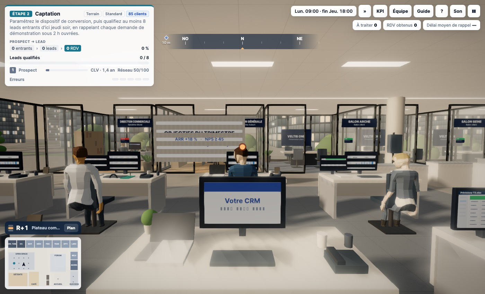
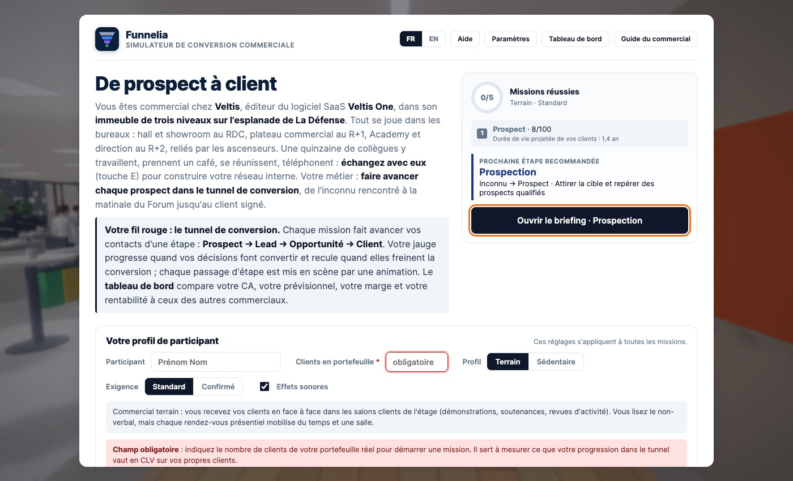

Interface : HUD en trois couches, accueil simplifié
Rien n'est encore codé. Cette page montre ce que je propose de changer dans l'interface, avec l'interface actuelle à côté pour comparer. Les mécaniques de jeu, les missions, les sauvegardes et les raccourcis clavier ne changent pas.
1. Le problème, en chiffres


Mesures relevées sur la version actuelle (navigateur sans affichage, fenêtre de 1400 × 850)
| Mesure | Aujourd'hui | Objectif du lot 4 |
|---|---|---|
| Éléments du HUD visibles en permanence en mission | 15 + 3 KPI + plan + boussole | 5 (couche 1) |
| Boutons dans la barre d'outils du HUD | 7 | 1 (menu) ; les raccourcis restent |
| Mots sur l'accueil | 715 | ≈ 150 |
| Hauteur de l'accueil | 1 609 px (≈ 2 écrans) | tient dans 1 écran jusqu'aux étapes |
| Boutons et champs sur l'accueil | 23 | ≈ 12 |
| Saisie obligatoire avant de jouer | oui (portefeuille) | non (valeur par défaut modifiable) |
| Mots sur le briefing | 596 | ≈ 120 visibles, le reste dépliable |
| Messages qui apparaissent en même temps au démarrage d'une mission | 5 (animation, coach, astuce Tab, fil, nom du lieu) | 2, l'un après l'autre |
Pour le jury : un joueur qui découvre le jeu ne peut lire qu'une information à la fois. Aujourd'hui, il reçoit tout dès la première seconde. Le principe retenu : afficher en permanence ce qui sert à chaque instant, afficher le reste au moment où il devient utile, et ranger ce qui sert rarement derrière une touche.
2. Le HUD en trois couches
Utilisez les boutons pour superposer les couches. Les pastilles numérotées renvoient à la légende sous l'image.
Couche 1 · permanente
Ce qui sert à chaque seconde. Petite, dans les coins, sans masquer la scène.
- Objectif : une phrase, un compteur, une jauge (remplace la carte de 10 lignes).
- Temps restant, erreurs, menu : la barre de 7 boutons devient un seul menu.
- Viseur et action possible, au centre (inchangés).
- Étage : la mini-carte n'est plus permanente, elle s'ouvre avec P.
- Rappel des 3 touches utiles, discret ; masqué après la première mission.
Couche 2 · contextuelle
Apparaît quand c'est utile, puis s'efface toute seule.
- Prochaine action et marqueur : remplace la boussole permanente. Affichés seulement quand une action précise attend le joueur.
- KPI qui change : s'affiche 4 s sous l'objectif. Les 3 pastilles KPI permanentes disparaissent.
- Une seule pile de messages : toasts et fil de l'entreprise fusionnés, 2 messages au plus à l'écran.
- Didacticiel : au centre, en bas, près de l'endroit où l'on regarde.
Couche 3 · à la demande
Ce qui sert à réfléchir, pas à se déplacer. Ouvert avec Tab, le temps est déjà figé pendant la lecture.
- CRM de la mission : tunnel détaillé, KPI, tâches, progression, plus les raccourcis (K, O, G, F, M, H) qui sortent de la barre du haut.
Quand le CRM est ouvert, la prochaine action, les messages et le rappel des touches se mettent en retrait ; le didacticiel et les KPI restent visibles.
Les touches K, O, G, H, M, F, P et Échap fonctionnent exactement comme aujourd'hui.
3. Accueil simplifié
Un seul gros bouton pour jouer. Le profil se résume à une ligne et le portefeuille a une valeur par défaut, donc on peut jouer sans rien saisir. Le long texte de présentation passe dans l'aide (« Comment ça marche ? »). Le suivi (progression, badges, classement, historique) reste disponible en bas, inchangé.
De prospect à client
Vous êtes commercial chez Veltis, à La Défense. Faites avancer chaque contact dans le tunnel de conversion : Prospect → Lead → Opportunité → Client.
Parlez à vos collègues (E), pilotez votre CRM (Tab) et évitez les freins à la conversion.
La valeur par défaut du portefeuille
Le champ reste présent dans « Modifier ». Il est simplement pré-rempli avec 50 clients, signalé « par défaut » tant que le joueur ne l'a pas changé. Le bilan et l'export CSV indiquent si la valeur est la vraie ou celle par défaut, ce qui garde les calculs de CLV honnêtes.
Sauvegardes : un joueur qui a déjà saisi son portefeuille garde sa valeur. La valeur par défaut ne s'applique que lorsque la sauvegarde n'en contient aucune, et aucune clé localStorage n'est renommée.
4. Les 60 premières secondes
Objectif : en moins d'une minute, le joueur a bougé, parlé à quelqu'un et vu sa jauge avancer une fois. À chaque moment, il ne reçoit qu'une consigne.
5. Ce que je propose de faire, dans l'ordre
| # | Étape | Jouable après ? |
|---|---|---|
| 4a | Portefeuille par défaut (50, signalé « par défaut », mentionné dans le bilan et le CSV) + profil résumé en une ligne sur l'accueil | oui |
| 4b | Accueil simplifié : bouton « Jouer », texte de présentation déplacé dans l'aide, étapes en ligne | oui |
| 4c | Briefing court avec « Détails » repliables | oui |
| 4d | HUD couche 1 : carte d'objectif compacte, barre d'outils réduite à un menu, mini-carte sur P | oui |
| 4e | HUD couche 2 : prochaine action et marqueur, KPI temporaires, pile de messages unique | oui |
| 4f | HUD couche 3 : le panneau CRM reprend KPI, progression et raccourcis | oui |
| 4g | 60 premières secondes : messages échelonnés, animation passable, didacticiel avec cible | oui |
Chaque étape fait l'objet d'un commit sur la branche lot-4-ux, avec les textes FR et EN modifiés ensemble et une vérification à 1400 × 850 et sur tablette.